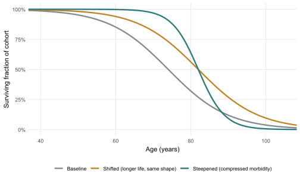

12The Ageing of Populations: Demography, Disease Burden and Health Systems
Long before any longevity therapy reaches a clinic, the world is already old and getting older. This chapter sets out the demographic facts that any honest discussion of ageing must start from — and that hold whether or not the biology of the preceding chapters ever reaches a patient.
Scale and method change here. Where earlier chapters looked down a microscope at cells, pathways and clocks, this one looks up at populations. The objects are no longer molecules but cohorts, age pyramids, fertility rates and dependency ratios, and the evidence is no longer the randomised trial but the demographic series and the long-range projection, with their own discipline of uncertainty. The science of Parts I–IV now becomes a premise rather than a subject, because the central fact of this chapter does not depend on it: the human population is undergoing the largest and most predictable transformation of its age structure in recorded history, and would be doing so even if no rejuvenation therapy ever worked. Whatever the laboratory eventually delivers will arrive into a world already remade by demography. This chapter describes that world — its changing shape, its shifting burden of disease, and the strain both place on the systems that care for the old — and leaves the questions of who should pay for it, and on what terms, to the chapter that follows.
The demographic facts have a peculiar epistemic status worth pausing on. Most of the claims in this book are provisional, hedged, awaiting replication. The core demographic claims are not. The people who will be over sixty-five in 2050 have already been born; the fertility decline that will shape the second half of the century is already most of the way through its course; and the age structure of the world in twenty-five years’ time can be projected with a confidence that no longevity trial can yet approach. Demography is the one part of the longevity conversation where the future is, to a first approximation, already visible. That is what makes it the right entry point into the social dimensions explored in the chapters that follow.
12.1 The demographic transition
Every society that has industrialised has passed through the same broad sequence, known to demographers as the demographic transition: death rates fall first, birth rates fall afterwards, and in the gap between the two the population grows quickly and then, as fertility settles below the level needed to replace each generation, begins to age and eventually to shrink. The transition is not a theory about the future; it is a description of what has already happened across most of the world, and is now happening in the parts that industrialised later. Its two engines are a fall in fertility and a rise in survival, and the most recent comprehensive estimates let us put numbers on both.
The fall in fertility has been larger and faster than almost anyone anticipated. According to the most recent global demographic analysis, the world’s total fertility rate — the number of children an average woman would bear over her lifetime at prevailing rates — more than halved between 1950 and 2021, from about 4.8 to 2.2, and is projected to continue falling to roughly 1.8 by 2050 and 1.6 by the century’s end (GBD 2021 Fertility and Forecasting Collaborators, 2024). The number of children born worldwide each year has already passed its peak, in the middle of the 2010s, and has been declining since. The threshold that matters is the replacement level of about 2.1 children per woman, below which each generation is smaller than the one before. By 2021 fertility had fallen below replacement in over half of all countries and territories; by 2100 it is projected that only a handful — most of them in sub-Saharan Africa — will remain above it. The same analysis projects a striking redistribution of the world’s births: by the end of the century, more than half of all children will be born in sub-Saharan Africa, the one region still early in its transition (GBD 2021 Fertility and Forecasting Collaborators, 2024). The world is not ageing uniformly. It is ageing fastest where it industrialised first, and remains young where industrialisation is most recent.
The second engine, rising survival, is the demographic face of the mortality revolution that public health and medicine achieved over the twentieth century. Global life expectancy at birth rose from around fifty years in 1950 to the mid-seventies by the late 2010s, before the COVID-19 pandemic produced a sharp and globally synchronised fall — the first sustained reversal in decades — from which most countries had substantially recovered by 2023 (GBD 2023 Demographics Collaborators, 2025). It is worth being precise about what this rise represents. For most of the period, the gain came not from extending the maximum human lifespan but from allowing far more people to approach it: the great reductions were in infant, child and mid-life mortality, which compressed deaths into older ages without moving the upper bound of human longevity very far. The age pyramid that results is no longer a pyramid at all. The broad base of children that characterised every historical human population is narrowing, the middle is broadening, and the apex of the very old is widening into a form demographers describe less as a pyramid than as a pillar.
Figure 12.1 shows the two engines together over the full arc from 1950 to the projected end of the century.
Figure 12.1: The two engines of the demographic transition, 1950–2100. Left: global total fertility rate, which more than halved between 1950 and 2021 and is projected to remain below the replacement level of about 2.1 (dashed line) for the rest of the century. Right: global life expectancy at birth, which rose from roughly 50 years to the mid-70s before the COVID-19 pandemic and its partial recovery. Values are illustrative, transcribed and rounded from the most recent GBD demographic and fertility analyses (GBD 2021 Fertility and Forecasting Collaborators, 2024; GBD 2023 Demographics Collaborators, 2025); projections beyond 2023 follow the reference scenario.
It is tempting to read this transition as the leading edge of the longevity revolution the earlier chapters described, but the inference would be premature, and the distinction is one the book has insisted on before. The demographic ageing now under way is overwhelmingly the completion of the old mortality revolution — more people surviving to old age — rather than any extension of the biological limit on how long a human can live. A recent demographic analysis of the longest-lived national populations argues the point directly: improvements in life expectancy have decelerated since 1990, and on present trends radical extension of the maximum human lifespan remains implausible within this century, barring a genuine intervention on the biology of ageing of the kind Parts I–IV examined (Olshansky et al., 2024). The demographic transition and the longevity revolution are different events. The first is largely accomplished and is what gives this chapter its urgency; the second is the hypothesis the rest of the book has been testing. Conflating them is the demographic version of the error Chapter 11 warned against — mistaking a real and important change for a larger one that has not occurred.
12.2 Disease burden and the compression of morbidity
An older population is not merely a population with more old people in it; it is a population whose burden of illness has a different composition. As societies pass through the demographic transition they pass through an epidemiological transition alongside it, in which the dominant causes of ill health shift from communicable, maternal, neonatal and nutritional conditions towards the non-communicable diseases of later life — cardiovascular disease, cancer, diabetes, dementia and the disorders of the musculoskeletal and sensory systems. The most recent global burden estimates capture both the success and the consequence: age-standardised rates of disease burden have fallen substantially over recent decades, a genuine public-health achievement, even as the absolute burden of non-communicable disease has grown with the growing and ageing population, and now dominates the global total (GBD 2023 Diseases and Injuries Collaborators, 2025).
To measure this, demographers and epidemiologists decompose the burden of disease into two components. Years of life lost count mortality — the years a death removes relative to a standard life expectancy. Years lived with disability count morbidity — time spent in states of reduced function, weighted by severity. Their sum is the disability-adjusted life-year, or DALY, the standard currency in which the global burden of disease is denominated. The distinction matters enormously for an ageing world, because the two components behave differently as a population grows old. Deferring death without deferring disability simply lengthens the disabled period; it converts years of life lost into years lived with disability rather than into healthy years. An ageing society can therefore find that its total burden of morbidity rises even as its mortality falls — that it is, in the bleak phrase of the literature, adding years to life without adding life to years.
This is the empirical heart of the matter, and it has a name. In 1980 James Fries proposed the compression of morbidity hypothesis: that if the onset of chronic disability could be postponed faster than death itself, the period of morbidity at the end of life would be squeezed into an ever-shorter interval, and people would live not merely longer but in good health almost to the end (Fries, 1980). The opposing possibility, the expansion of morbidity, is that medicine is better at postponing death than at postponing disease, so that longer lives mean longer sick endings. Which of the two an intervention produces is not a matter of how much life it adds but of how it adds it — and it is here that the demography of this chapter reconnects with the biology of the preceding ones.
A recent mathematical treatment makes the connection exact. Modelling longitudinal health and survival data across mice, flies and worms, Yang and colleagues distinguish two ways an intervention can act on the survival curve (Yang et al., 2025). An intervention that shifts the curve to the right — extending mean lifespan while preserving its shape — extends the period of late-life morbidity in the same proportion, and does not compress the relative sickspan at all. Only an intervention that steepens the curve, making survival more rectangular so that most of the population remains healthy until a sharper decline near the end, compresses morbidity relative to lifespan. The result is sobering for the field: many of the best-studied longevity interventions, including caloric restriction, principally shift the curve rather than steepen it, and would therefore extend the sick period along with the well one. Fries’ hopeful hypothesis turns out to be true only for a particular class of intervention, and identifying which of the therapies of Parts I–IV belong to that class is among the most consequential open questions in the field.
NoteKey concept — shifting the curve versus steepening it
The compression of morbidity does not follow automatically from living longer. What matters is the shape of the survival curve, not just its position. An intervention that shifts the whole curve to the right adds years at both ends of the health spectrum, lengthening the frail late period in proportion to the healthy one; the relative sickspan is unchanged. An intervention that steepens the curve — rectangularises it — keeps the population well for longer and then concentrates decline into a shorter final interval; this, and only this, compresses morbidity. The practical corollary for everything in Parts I–IV is that “extends lifespan” and “compresses morbidity” are different claims requiring different evidence, and a therapy can deliver the first while failing the second (Fries, 1980; Yang et al., 2025).
Figure 12.2 illustrates the distinction that the key concept describes.
Code
library(ggplot2)age<-seq(0, 110, by =0.5)surv<-function(t, m, b)1/(1+exp((t-m)/b))# logistic survivald<-rbind(data.frame(age, S =surv(age, m =74, b =8.0), scenario ="Baseline"),data.frame(age, S =surv(age, m =82, b =8.0), scenario ="Shifted (longer life, same shape)"),data.frame(age, S =surv(age, m =82, b =3.5), scenario ="Steepened (compressed morbidity)"))d$scenario<-factor(d$scenario, levels =c("Baseline","Shifted (longer life, same shape)","Steepened (compressed morbidity)"))pal<-c("Baseline"="#8a8a8a","Shifted (longer life, same shape)"="#c0852a","Steepened (compressed morbidity)"="#2c7a7a")ggplot(d, aes(x =age, y =S, colour =scenario))+geom_line(linewidth =1.1)+scale_colour_manual(values =pal)+scale_y_continuous(labels =scales::percent_format(accuracy =1))+labs(x ="Age (years)", y ="Surviving fraction of cohort", colour =NULL)+coord_cartesian(xlim =c(40, 105))+theme_minimal(base_size =11)+theme(panel.grid.minor =element_blank(), legend.position ="bottom", legend.text =element_text(size =8.5))

Figure 12.2: Shifting versus steepening the survival curve. A baseline survival curve (grey) can be moved by an intervention in two qualitatively different ways. Shifting it rightward (amber) raises mean lifespan but preserves the gradual shape, extending the late-life period of decline proportionally. Steepening it (teal) keeps survival high until a sharper terminal drop — a more rectangular curve — which is what compresses morbidity relative to lifespan. The curves are an illustrative logistic model, following the conceptual argument of Fries (1980) and its formalisation by Yang and colleagues (2025) (Fries, 1980; Yang et al., 2025).
The compression-of-morbidity question is therefore not a demographic curiosity but the precise point at which the social value of the longevity project will be decided. A world that succeeds only in shifting survival curves will have spent enormously to manufacture additional years of frailty and dependency; a world that learns to steepen them will have achieved something close to the original promise of the field. The demographic data tell us which way the curves have moved so far — mostly rightward, through the mortality revolution, with only modest rectangularisation — and the biology tells us what it would take to move them the other way. Neither discipline answers the question alone.
12.3 Pressure on health and care systems
The third consequence of the transition is arithmetical, and it is the one that reaches furthest into politics. As the age structure shifts, the ratio of older people to those of conventional working age rises — the old-age dependency ratio, conventionally the number of people aged sixty-five and over per hundred aged fifteen to sixty-four. In the societies furthest through the transition the ratio is rising steeply, and the projections are among the most reliable in this book because, again, the relevant cohorts already exist. Figure 12.3 shows the divergence: a world average climbing gradually, the older societies of Europe and East Asia climbing sharply towards ratios at which two or three working-age adults correspond to each older person, and sub-Saharan Africa remaining low for decades because its transition has barely begun.
Figure 12.3: Old-age dependency ratio (population aged 65+ per 100 aged 15–64), 1950–2100, for the world and three contrasting regions. The societies furthest through the demographic transition — Europe and East Asia — face the steepest rises, while sub-Saharan Africa remains low because its transition is still early. Values are illustrative, transcribed and rounded from UN World Population Prospects (2024 revision); figures from 2025 onward are projections under the medium-variant scenario.
The ratio is a crude instrument — it counts people by birthday rather than by capacity, treats everyone over sixty-five as dependent and everyone of working age as productive, and ignores the fact that healthier ageing can keep people active and self-supporting for longer. That last qualification is precisely where the biology of this book re-enters the social calculus: an intervention that compressed morbidity would, in effect, redraw the dependency ratio by extending the period of functional independence, which is why the distinction of the previous section is fiscal as well as clinical. But even read generously, the direction of travel is not in doubt, and it places three distinct pressures on the systems that support older people: a rising demand for health care, whose per-capita cost concentrates heavily in the last years of life; a rising demand for long-term care, the slow and labour-intensive support of people who can no longer manage daily activities unaided; and a shrinking relative base of working-age adults to provide and finance both (Kocot et al., 2024).
Of these, long-term care is the dimension most often underestimated, because it is the least medical and the most human. It is delivered overwhelmingly by informal carers — spouses, adult children, usually women — whose unpaid labour is invisible to most economic accounting, and the same fertility decline that drives the dependency ratio is shrinking the family networks on which informal care has always depended. The formal alternatives are expensive and uneven, and the question of how to sustain the independence of older people for as long as possible has accordingly become a research field in its own right. The most comprehensive recent synthesis — a network meta-analysis of 129 trials and nearly 75,000 participants — found that the intervention most likely to help older people remain living in their own homes is individualised care planning built around medication review and regular follow-up, with several multi-component combinations also showing promise (Crocker et al., 2024). The same review is candid about the limits of the evidence: most of the comparisons rested on low or very low certainty, some combinations unexpectedly appeared to reduce independence, and the field is far from being able to prescribe a reliable formula. Even the care we know how to give, in other words, rests on a thinner evidence base than the scale of the need demands (Cattaneo et al., 2025; Ophir & Polos, 2021).
12.4 The policy response and the limits of adaptation
These facts have not gone unrecognised at the level of policy. The World Health Organization reframed the entire field a decade ago around the concept of healthy ageing — defined not as the absence of disease but as the maintenance of the functional ability that allows wellbeing in older age — and has since organised international effort around a Decade of Healthy Ageing running through 2030 (The Lancet Healthy Longevity, 2024; World Health Organization, 2015). The reframing matters because it shifts the policy target from lifespan to function, which is the social analogue of the biological shift from extending life to compressing morbidity. But the assessments of that decade’s progress have been sober, noting that implementation has lagged ambition and that the demographic clock is running faster than the policy response (The Lancet Healthy Longevity, 2024). The pressure described in this section is not a forecast of crisis; many societies will adapt, through later retirement, immigration, productivity gains and reform of care financing. It is, rather, the measure of the task — the size of the bill that an ageing world must find a way to meet, whatever it decides about the more speculative project of intervening in ageing itself.
The ways an ageing society might meet that bill are several, and none is without limit. Later retirement enlarges the working-age base, but only if the additional years are healthy ones, and so depends on precisely the compression of morbidity that remains unproven. Immigration can rejuvenate an age structure, but locally and temporarily, since the sending countries are themselves ageing as global fertility converges downwards (United Nations, Department of Economic and Social Affairs, Population Division, 2025). Productivity gains can in principle allow a smaller workforce to support a larger dependent population, yet the care of frail older people is among the activities least susceptible to automation, being irreducibly human and labour-intensive. Reform of how care is financed can redistribute the burden but cannot dissolve it. Each lever buys time rather than escape, and each is sensitive to the same hidden variable: how much of late life is spent in functional health rather than dependency (OECD, 2025).
That variable is what the World Report’s organising concept was designed to capture. Beneath the phrase “healthy ageing” sits a more precise idea — intrinsic capacity, the composite of a person’s physical and mental capabilities, together with the functional ability that emerges when that capacity meets a supportive environment (World Health Organization, 2015). The reframing relocates the target of policy from the individual disease, which medicine treats one organ at a time, to the trajectory of capacity, which declines across systems in concert — the multidimensionality Part I identified as the signature of ageing itself. It also dissolves a false binary: a person with several diagnoses may retain high functional ability with the right support, while another with none may have lost it, so that counting diseases misses what matters most. This is why the demographic accounting of this chapter cannot close the question it raises. Whether the coming decades bring a manageable adjustment or an unsustainable strain depends not on the number of older people, which is already fixed, but on how many of their years are spent in capacity — the one quantity demography measures least well, and the one the biology of the earlier chapters might yet change. It is on that hinge that the economics of the next chapter turns.
ImportantAnalogy — the long dusk and the sudden night
A life can end in two shapes. One is a long dusk: the light fades slowly over many years, each dimmer than the last, the period of half-light stretching on. The other is the dusk of the tropics, where the sun stays bright almost to the horizon and then drops quickly into night. The compression of morbidity is the search for the second shape — not a longer day necessarily, but one that stays bright to its end. The dependency ratio counts only the length of the day; it cannot see whether the final hours are lived in full light or in a lengthening gloom. That is the figure the biology of this book might one day change, and the reason a demographic chapter cannot be the last word on an ageing world.
The demography sets the stakes; it does not resolve them. We now know the shape of the ageing world, the burden of disease it carries, and the scale of the pressure it places on the systems that care for the old. What we have deliberately left untouched is everything normative: who should bear the cost, who will gain access to whatever therapies emerge, whether intervening in ageing is a prudent social investment or a distraction from cheaper public-health goods, and how the benefits and burdens should be shared across classes, countries and generations. Those are questions of economics and justice, not of demography, and the next chapter takes them up.
Cattaneo, A., Vitali, A., Regazzoni, D., & Rizzi, C. (2025). The burden of informal family caregiving in Europe, 2000–2050: A microsimulation modelling study. The Lancet Regional Health — Europe, 53, 101295. https://doi.org/10.1016/j.lanepe.2025.101295
Crocker, T. F., Ensor, J., Lam, N., Jordão, M., Bajpai, R., Bond, M., Forster, A., Riley, R. D., Andre, D., Brundle, C., Ellwood, A., Green, J., Hale, M., Mirza, L., Morgan, J., Patel, I., Patetsini, E., Prescott, M., Ramiz, R., … Clegg, A. (2024). Community based complex interventions to sustain independence in older people: Systematic review and network meta-analysis. BMJ, 384, e077764. https://doi.org/10.1136/bmj-2023-077764
GBD 2021 Fertility and Forecasting Collaborators. (2024). Global fertility in 204 countries and territories, 1950–2021, with forecasts to 2100: A comprehensive demographic analysis for the global burden of disease study 2021. The Lancet, 403(10440), 2057–2099. https://doi.org/10.1016/S0140-6736(24)00550-6
GBD 2023 Demographics Collaborators. (2025). Global age-sex-specific all-cause mortality and life expectancy estimates for 204 countries and territories and 660 subnational locations, 1950–2023: A demographic analysis for the global burden of disease study 2023. The Lancet, 406(10513), 1731–1810. https://doi.org/10.1016/S0140-6736(25)01330-3
GBD 2023 Diseases and Injuries Collaborators. (2025). Burden of 375 diseases and injuries, risk-attributable burden of 88 risk factors, and healthy life expectancy in 204 countries and territories, including 660 subnational locations, 1990–2023: A systematic analysis for the global burden of disease study 2023. The Lancet, 406(10513), 1873–1922. https://doi.org/10.1016/S0140-6736(25)01637-X
Kocot, E., Ferrero, A., Shrestha, S., & Dubas-Jakóbczyk, K. (2024). End-of-life expenditure on health care for the older population: A scoping review. Health Economics Review, 14(1), 17. https://doi.org/10.1186/s13561-024-00493-8
Olshansky, S. J., Willcox, B. J., Demetrius, L., & Beltrán-Sánchez, H. (2024). Implausibility of radical life extension in humans in the twenty-first century. Nature Aging, 4(11), 1635–1642. https://doi.org/10.1038/s43587-024-00702-3
Ophir, A., & Polos, J. (2021). Care LifeExpectancy: Gender and unpaid work in the context of population aging. Population Research and Policy Review, 41(1), 197–227. https://doi.org/10.1007/s11113-021-09640-z
The Lancet Healthy Longevity. (2024). The decade of healthy ageing: Progress and challenges ahead. The Lancet Healthy Longevity, 5(1), e1. https://doi.org/10.1016/S2666-7568(23)00271-4
World Health Organization. (2015). World report on ageing and health. World Health Organization.
Yang, Y., Mayo, A., Levy, T., Raz, N., Shenhar, B., Jarosz, D. F., & Alon, U. (2025). Compression of morbidity by interventions that steepen the survival curve. Nature Communications, 16(1), 3340. https://doi.org/10.1038/s41467-025-57807-5